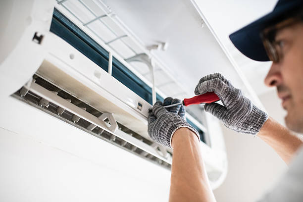

Professional Ductless Mini Split Services in Carefree, Arizona
Carefree, Arizona perfectly embodies its name - a tranquil desert oasis where residents enjoy a truly carefree lifestyle surrounded by stunning natural beauty. This small, exclusive town nestled among desert boulders and native vegetation offers luxury living in harmony with nature. Our professional ductless mini split services provide whisper-quiet, efficient climate control that preserves Carefree's peaceful atmosphere while delivering superior comfort for this community's distinctive desert homes.
From Carefree's luxury desert estates to charming pueblo-style homes and everything in between, we've proudly served this serene community for over 15 years. Our certified technicians understand the unique needs of Carefree residents who value tranquility, natural beauty, and sophisticated comfort, providing comprehensive ductless solutions that excel in Arizona's extreme desert climate while maintaining the peaceful environment that makes Carefree special.

Why Carefree Residents Choose Ductless Mini Splits
Preserving the Carefree Tranquility
Carefree's residents chose this community for its peaceful, serene atmosphere and connection to the natural desert environment. Ductless mini splits operate at whisper-quiet levels, ensuring that your HVAC system never disturbs the tranquil ambiance that makes Carefree living so special. These systems provide powerful cooling and heating without the noise that could disrupt the peaceful desert silence.
Perfect for Desert Architecture
Carefree features distinctive desert architecture that blends seamlessly with the natural boulder formations and native landscaping. Ductless systems provide efficient climate control without requiring extensive ductwork that could compromise the architectural integrity or disturb the natural desert setting that defines Carefree properties.
Energy Efficiency for Desert Living
Carefree's elevated desert location experiences intense temperature variations and extreme summer heat. Modern ductless systems offer exceptional energy efficiency with SEER ratings often exceeding 20, helping manage utility costs while providing consistent comfort through Arizona's challenging weather conditions.
Comprehensive HVAC Services Throughout Carefree
Premium Ductless Mini Split Installation
Our professional installation team provides premium ductless mini split installation throughout Carefree. We serve all areas including The Boulders, Carefree Foothills, Desert Forest, and surrounding luxury desert communities throughout this exclusive town.
Priority Emergency HVAC Service
Carefree's remote desert location and extreme temperatures make HVAC reliability absolutely critical. Our priority 24/7 emergency repair service ensures rapid response throughout Carefree, helping restore comfort when temperatures exceed 115°F in the desert heat.
Complete HVAC Solutions
Beyond ductless systems, we provide comprehensive HVAC services including HVAC installation, AC repair, heating repair, and preventive maintenance for all system types.
Serving All Carefree Communities
The Boulders
This world-renowned luxury resort community features stunning desert homes nestled among natural boulder formations. Our sophisticated ductless installations provide the silent, reliable operation that preserves The Boulders' exclusive atmosphere while delivering the premium comfort that residents expect.
Carefree Foothills
The Foothills area features luxury homes that take advantage of Carefree's elevated desert setting and spectacular views. Our ductless systems provide efficient climate control that works with the area's unique topography and custom architectural designs.
Desert Forest
This area features homes designed to blend with the natural desert environment and preserve native vegetation. Our ductless installations provide reliable performance while respecting the environmental sensitivity that Carefree residents value.
Carefree Village
The charming village area features a mix of residential and commercial properties that maintain Carefree's small-town character. Our ductless solutions provide efficient climate control while preserving the intimate, peaceful atmosphere of this special community.
Commercial Ductless Solutions for Carefree Businesses
Carefree's business community includes luxury resorts, art galleries, restaurants, and professional services. Our commercial HVAC services include premium ductless solutions perfect for Carefree's quality-focused business environment.
Luxury Resort and Hospitality
Carefree's world-class resorts and hospitality venues require flawless climate control that maintains guest comfort while preserving the serene desert atmosphere. Our commercial ductless systems provide whisper-quiet operation ideal for luxury hospitality applications.
Art Galleries and Retail
Carefree's art galleries and unique retail stores benefit from ductless systems that maintain comfortable environments for visitors while protecting valuable artwork and merchandise. We've installed systems throughout Carefree's distinctive commercial areas.
Indoor Air Quality Solutions for Carefree
Carefree's pristine desert location requires the finest indoor air quality solutions available. Our comprehensive air quality services include advanced filtration, premium air purification systems, and professional duct cleaning services.
Premium Air Quality for Desert Living
Carefree residents expect the purest indoor air quality to match the clean desert environment they've chosen. Our air quality solutions help create exceptionally clean, healthy indoor environments while maintaining the connection to the pristine desert air that makes Carefree special.
Energy Efficiency and Smart Home Integration
Carefree residents appreciate sophisticated technology that enhances their desert lifestyle. Our energy efficiency specialists help you integrate HVAC controls with luxury smart home systems while maximizing energy savings in Arizona's extreme climate.
Luxury Smart Home Integration
Modern ductless systems integrate seamlessly with high-end smart home platforms and luxury automation systems. Carefree homeowners can control their climate remotely while optimizing energy use for their desert retreats and vacation properties.
Utility Rebate Programs
Carefree residents served by Arizona Public Service (APS) may qualify for substantial rebates on high-efficiency HVAC installations. We help navigate available programs to reduce installation costs and maximize your investment value.
Why Carefree Trusts Our HVAC Expertise
Local Knowledge and Desert Experience
Our 15+ years serving Carefree provides deep understanding of desert climate challenges, luxury property requirements, and the lifestyle preferences of this exclusive community. We know Carefree's unique character and provide personalized service that respects both the natural environment and sophisticated comfort expectations.
Premium Quality and Service
Carefree residents expect and deserve the finest quality in every aspect of their desert lifestyle. Our certified technicians, premium equipment, and comprehensive warranties ensure your investment performs flawlessly while respecting the tranquil environment that makes Carefree special.
Customer Satisfaction
Our commitment to customer satisfaction has made us Carefree's trusted HVAC contractor. We provide discreet, professional service and exceptional work that consistently meets the high expectations of this discerning community that values both luxury and tranquility.
Schedule Your Carefree HVAC Consultation
Ready to enhance your Carefree home or business with professional ductless mini split installation? Our expert team provides comprehensive consultations that assess your specific needs and recommend optimal solutions for your desert property and luxury lifestyle.
Whether you're at The Boulders, in Carefree Foothills, Desert Forest, or anywhere else in this exclusive community, we provide the premium HVAC services that Carefree demands. Contact us today to schedule your private consultation and discover how ductless mini splits can transform your comfort while preserving the tranquil beauty of your desert retreat.
From priority emergency service to premium installations, our Carefree HVAC team delivers the exceptional service and luxury results that this community deserves. Experience the difference of truly carefree comfort - call us today for ductless solutions that meet Carefree's uncompromising standards for quality and tranquility.